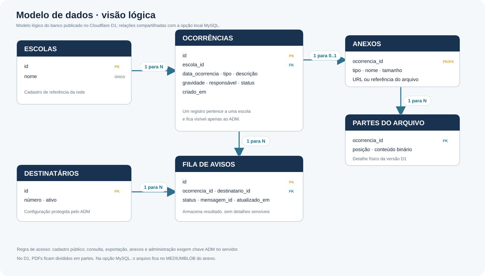

ETAPA 01
Registrar
Selecionar escola, data, tipo, gravidade e responsável. Descrever os fatos com objetividade.
Registro · acompanhamento · proteção
Uma aplicação web para registrar fatos escolares de forma organizada e permitir que o ADM acompanhe a rede com acesso controlado.
01 · Jornada
O registro é simples para a escola. A leitura consolidada fica com a equipe administrativa autorizada.
ETAPA 01
Selecionar escola, data, tipo, gravidade e responsável. Descrever os fatos com objetividade.
ETAPA 02
Opcionalmente anexar PDF de até 5 MB ou inserir link seguro para documento externo.
ETAPA 03
Receber protocolo. O ADM consulta histórico, detalhes, calendário, indicadores e relatórios.
02 · Perfis e controle
| Perfil | Permissões | Como entra |
|---|---|---|
| Equipe escolar | Ver escolas e registrar ocorrência. | Link de cadastro. Não consulta histórico da rede. |
| ADM autorizado | Consultar, filtrar, editar, excluir, baixar anexos, exportar CSV e ver indicadores. | Chave ADM validada no servidor. |
| Destinatário WhatsApp | Receber aviso genérico. | Link abre o painel, mas não concede acesso. Integração desligada na demonstração. |
Consultas e anexos retornam acesso negado sem autenticação ADM. A chave não é guardada no navegador nem publicada no Git.
Ambiente de demonstração usa dados compartilhados. Usar dados fictícios e não anexar documentos pessoais.
03 · Fluxo da aplicação
Após migrar, Pages continuará hospedando a interface. O Worker seguirá protegendo a API e encaminhará operações ao Supabase por HTTPS.
04 · Modelo de dados

A modelagem lógica permanece na migração. A implementação física do anexo pode mudar: D1 divide PDFs em partes; Supabase pode guardar arquivos no Storage e metadados no banco.
05 · Demonstração e próximos passos